In traditional Chinese culture, a son’s life is told in the characters of his name. A month after he’s born, his paternal grandfather bestows on him a distinctive name. Often this name bespeaks strength and leadership, attributes he’ll need to fulfill his filial piety. In school and in marriage, at work and in society, names are added to his given one; each enhances the story of the man he is becoming. Lengthened by his deeds, this name ripens with age as he assumes esteemed status as family elder. In death,his name is preserved in family history, granting for eternity what he possessed in life – the privilege of self-description.
A Chinese daughter’s life is also foretold in her name. She may be given a flowery one, such as “Splendid Orchid,” expressing her family’s hope that beauty guides her fate. Sometimes a girl carries a family’s disappointment in her given name – “Little Mistake,” or “Seeking a Little Brother.” A daughter burdens her family until she marries; then she is an outside daughter, belonging to her husband’s family. People might call her “husband’s wife” or “son’s mother,” names others like her are called. As an elder, she answers to “old woman.” This seems apt preparation to depart a life devoid of self-description.
These archetypes trace the gendered trajectories of children growing up in Chinese families not so long ago. Now, as grandparents, they watch with wonderment as the ambitions and sensibilities of 21st century girls expand in ways unimagined in their younger years. Stubborn gender traditions still tug at them.
What's in a Name?
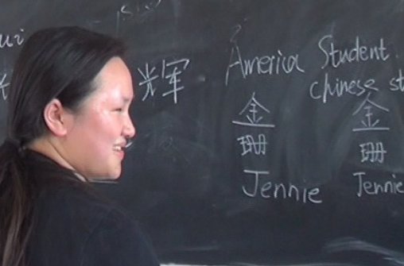
Chinese write their family name (xing) first, followed by the given name (mingzi), since the clan is more important than the individual. Many names have three characters, each pronounced with one syllable. Traditionally, a rural girl’s name had only one character, since she had no given name.
Families give children aspirational names. For a girl, it might be Beautiful (娟), Peaceful (平) or Fragrance (芳), though it could be Too Many if her family wanted a son. For boys, Great (伟), Heroic (杰), or Scholar (文人) is common. If a boy was a family’s only son, he might get a girl’s name to ward off evil spirits; girls were not considered valuable enough for such spirits to attack them.
At marriage, a woman keeps her family name, even though she likely lives among her husband’s clan. Nearly all children carry their father's surname. The children born in a clan’s same generation traditionally share the first character of their given name, even when there is a huge age difference; this helps specify the clan and generation they come from since there are relatively few surnames in Chinese. Relatives often call each other by how they are related. Close friends use nicknames (chuohao) that speak to a person’s characteristics, like "Big Head,” or behavior, like “Wine Cup.”
A different sense of wonderment about Chinese girls’ lives drew two American teen adoptees, Jennie and Maya, back to the rural towns in China’s Jiangsu province where each was left as a baby in September 1996. By law, most families had just one child. Abandonment became these newborn girls’ fate, likely because their birth families decided to raise a son.
Curious about the Chinese girlhoods they didn’t have, Jennie and Maya traveled to the only places here they could construe as “home”: the towns where they were abandoned. Eager to explore trajectories of girls who grew up there, the Americans relied on the guidance of “hometown” daughters who are about their age. Six local girls welcomed Maya and Jennie into their lives. In exchange, the Americans told them about their very different girlhoods in a distant place – girlhoods shaped in part by mothers engaged in professional careers and who encouraged similar ambitions for them.
If generational patterns hold, Maya and Jennie’s Chinese friends will be married by the time they are 25, will become mothers soon after, and will live in the town where they were raised. That’s the typical experience for young women in rural China. In cities, the age of marriage is likely to be older (most marry by 27) – though pressures exerted by family and society to marry are no less intense.
Maya and Jennie’s personal pathways are less predictable.
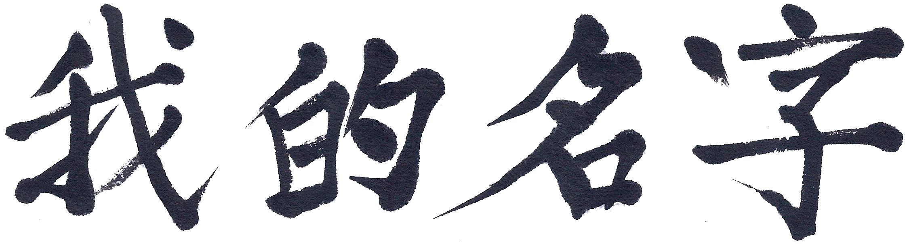
My Name
On a sweltering August morning, Maya sits at a large wooden table with three girls from Xiaxi Town. In a week back “home,” she’s gotten to know a bit about each of them. If Maya had grown up here, these girls might have been her friends, as each is now becoming. But instead I adopted her from a nearby orphanage when she was nine months old, and she spent her girlhood in Cambridge, Massachusetts.
I wasn’t married, so my family name became hers. In China, a family headed by an unwed mother isn’t recognized as a legitimate family. Giving birth out of wedlock is a birth planning violation; doing so triggers a punishing fine imposed by family planning cadres. In some places in China, any job other than farming will be taken away from the mother, who will also confront barriers to legally registering her child with the necessary hukou. Enormous stigma is attached to such births; the mother is seen as acting “too strong, too independent.” Such challenges often lead single women who do get pregnant to decide not to raise their child.
Perhaps an unwed mother abandoned the baby who I then raised on my own in America.
In its Sanskrit origin, Maya’s name means “illusion” and “magic”; its older derivation speaks of power and wisdom. Two American Mayas, with the surnames Lin and Angelou, are brilliant, creative, inspirational women who personify the life force of this name. When she was 21, Lin began to design the Vietnam War Memorial. Chinese in heritage, American by birth, Lin’s immigrant parents raised her in the Midwest. Angelou was an African-American poet and author descended from slaves. America was her ancestor’s fate, not their choice. Two centuries later, Angelou’s words told Americans of the brutality of Black people’s lives in segregated America.
As it was for Angelou’s ancestors, America was not my daughter’s destination of choice, only of consequence. Perhaps this name I chose offers her a head start in finding the power of self-description.
On this August morning Maya listens as her Chinese friends tell about their names. “My father wants me to sound right so he gives me a morning sound,” says 16-year old Chen Chen, who likely arrived before the midday sun. When she was seven years old, her father left his marriage and his family home. Chen’s mother left soon after, so Chen’s paternal grandparents raised her. The name given to her male cousin, Chen says, means “pillar of the house … to hold up the whole house.”
Yuan Mengping is a few years older than her neighbor Chen. Mengping’s parents raised her, and she credits her mother with blending meaning into a name she’s happy to have. “Meng, this name my mother gave me, means ‘may all the dreams come true.’ And Ping,” she says, with her smile widening, “she wants me to be a beautiful girl.” Her male cousin’s name, Wei Jun, assigns to him the strength of an Army soldier.
Girls' Names,
Boys' Names In sharing the meaning of their own names – and their male cousins’ – the girls explore how names define family expectations.
A few days earlier, Maya hung out with Yan Yujiao in the house where her uncle’s family is raising her. Maya told Yujiao what name her orphanage gave her: Chang Yulu. In Chinese, surnames come first, placing societal value on the family. “Chang” signified the orphanage’s location in Changzhou, since she had no family that anyone knew. Orphanage staff gave her “Yulu,” part of which she shares with Yujiao. “Yu is beautiful jade, so my name means a bright and beautiful girl,” Yujiao now tells the other girls. Her six-year-old male cousin’s name reveals a different destiny: “Tomorrow I will be an outstanding person.”
Heads nod, as if to say, “Ah, yes, I see the pattern.”
“So names reflect the expectations of boys and girls,” says Feng Yuan, grabbing the girls’ interest. My friend Yuan lives in Beijing, and I’d asked her to join the girls for a few days in Changzhou. When she and I met in the United States in 2001, Yuan was a reporter and editor at China Women’s News, a national daily promoting gender equity in China. Five years later, she left to become more directly involved in women’s rights in China. As a board member of the Anti-Domestic Violence Network and Women’s Network Against AIDS/China and an expert in women’s studies, Yuan trains women throughout China to engage in improving girls and women’s lives.
Today Yuan is guiding these teens into unaccustomed territory in asking them to explore their lives as girls. Reflexively, each one says there’s no difference between girls and boys in China: “We’re equal,” they claim. Pushing past what the history books say is not encouraged at school or home. In the 1950s Mao Zedong declared, “women hold up half the sky,” and his words endure as truth even though no woman has served on the top Standing Committee of the Politburo since the founding of the People’s Republic of China. Inconvenient truths are swept away. When Mengping exclaims how rare this opportunity is and how much she’s enjoying it, Yuan translates for Maya: “She says she doesn't talk of such things with girls. They always talk about movie stars and what kind of clothes are more beautiful, or how to make themselves look pretty.”
The girls’ exercise with their names slightly erodes their insistence on their equality with boys. “Parents give good wishes with our name,” Yuan says, underscoring their learning. “For girls, those wishes are for inside the family, but for boys, they are more for outside the family,” she explains. “Society has different value for girls and boys, too, and this affects our careers.” Yujiao fans her face vigorously against the oppressive heat as her head nods in rhythm with Yuan’s words. “Boys’ names are strong, outstanding, and important. Girls’ names are beautiful and gentle,” Yuan adds.
Drawing Their
Dreams The girls render key moments of their lives in colorful drawings – as their grandmothers look on with keen interest.
She hands each girl a piece of white paper and rolls colored markers onto the table. It’s time for the girls to draw their lives. Yuan provides three prompts: “Start with the first time you realized you are a girl. It can be anytime,” she says. “What was your reaction? Second, draw a difficulty you overcame. Third, show your dreams for your future – your personal life or your career. With our dreams, are there any difficulties as girls that we need to overcome?”
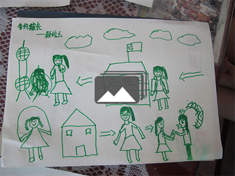
Pictures Tell Their Stories
Ten minutes later the girls start telling the stories they drew. Chen is barely visible in the first part of her drawing; she’s a tiny blue figure in the bow of a sailing ship entering the river. Growing up, Chen says with her customary shyness, she felt confused. She doesn’t explain why, but Yuan’s prompt likely stirred up memories of her father and mother leaving Xiaxi when she was seven. Perhaps the ship represents an urge she had to follow. Her grandparents’ love, she says, carried her across the river, though she still looks sad on the other side. Now her dream is to sing Western-style pop music.
Chen and Mengping’s grandmothers hover nearby, listening attentively until their granddaughters shoo them into another room. They have had few opportunities like this to talk about their lives. If Chen’s 67-year old grandmother had sketched her life at 16, her drawing might have been a solitary figure tracing a thin line, to visualize her lonely journey to a place and family she didn’t know. Her family had sons to feed and educate, so they sent her to live with a family in Xiaxi. As a girl of marital age, her value was in becoming this family’s “outside daughter,” a wife for their son. In a home of strangers, everything familiar vanished except her familial duty to marry this son. He is Chen’s 69-year old grandfather.
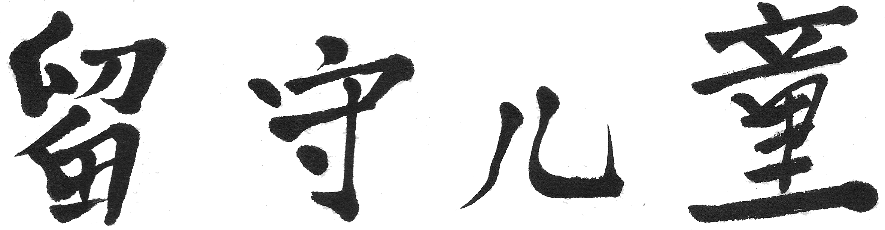
Left Behind Child
Parental death, divorce, and departures of wage-seeking parents together leave an estimated 61 million children behind in rural China. Family members usually assume their care. Most often grandparents with meager farm incomes raise them. At Lunar New Year, the children of migrant workers spend rare time with parents whom they barely know.
Chen’s paternal grandparents raised her after her parents divorced. Yujiao’s uncle’s family began caring for her as a baby after her father died and her mother left Xiaxi. Neither girl has seen or heard from her mother since then, nor does either have a photo to know what her mother looks like.
Chen’s grandmother attended school for two years; that was all her own grandmother would allow with brothers and male cousins to educate. Similar circumstances for many girls in her generation mean that most women who are raising left-behind children are illiterate. They can’t give their grandchildren the boost they need to succeed on China’s competitive tests that determine their advancement through school.
Slang Speaks to Millions
Slang phrases highlight social trends in China, like “straight man cancer,” the equivalent to the American expression “male chauvinist pig.”
It is not surprising, then, that Chen did not earn a seat in senior high school. At 16, she left home for a vocational program where she lives in a crowded dormitory room and washes dishes at a restaurant. Chen’s road out of rural poverty – if she had one – vanished when she was young, as happens for many left-behind children. Her grandparents’ next task will be to find Chen a husband.
Not far from Xiaxi is the rural town of Xixiashu. Jennie, an American adoptee, was abandoned here, and the police took her to the Changzhou orphanage. She’s back in her “hometown,” and her guide is 18-year-old Jin Shan, who grew up here. Shan was seven months old when her parents headed north to seek work as migrant tailors. Her grandparents, who are farmers, raised her. She could count on seeing her parents only when they came home for Lunar New Year. But when she felt “summer heartache,” her grandparents would take Shan by train 350 miles to Jinan, the capital of Shandong province, to visit her mom and dad.
“My parents were busy, so they left me by myself. Most of the day I was home, and after work they’d take me out to play,” Shan recalls. “They lived in a very small place. Sometimes I didn’t like to go there because I didn’t know people so I couldn’t have fun. I had friends to play with at my grandparents’ house, but when I missed my parents, I would go find them.”
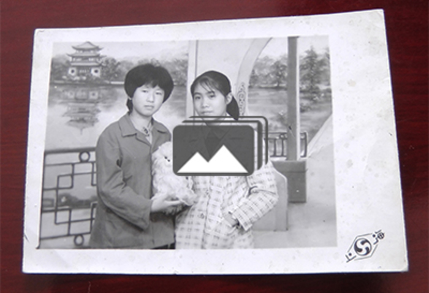
Jin Shan's Family Album
She was in sixth grade when her parents moved back to Xixiashu. With money they had saved, they set up a store that sells steel for local construction. Their apartment has a bedroom for Shan, though she still likes to stay at her grandparents’ house. In junior and senior high school, Shan boarded on campus, as students often do. “On weekends I went home and to my grandparents’ house,” she says. Shan brought Jennie to her grandparents’ house and farm on the hottest days of summer, even though her parents’ house had the air conditioning. What their concrete farmhouse lacks in modern amenities, it makes up for in what Shan treasures most – love. “I am close to my grandparents,” Shan says. “I can tell them everything. But when I try to tell some things to my parents, they will be very angry or disagree with me. So I like to tell everything to my grandparents.”
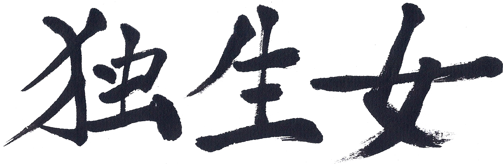
Only Child Daughter
The upside-down triangle of the three-generation family – with four grandparents and two parents pointing toward one child – typifies the Chinese family as it never has before. In the midst of this change, many more young people – especially in first-tier cities and densely populated provinces – now say they want to have a daughter, given the cost of raising a son. For a son to marry, his family usually helps him buy an apartment or a house for the couple to live in; this exceedingly large expense can consume the savings of several generations. Then there’s the car. Lacking these essentials, he is embarking on what the Chinese call a “naked marriage,” diminishing the chances that the woman will say “yes.”
In rural areas where two children are possible, the ideal family remains a son and daughter; here in Jiangsu province most families, rural and urban, are still limited to one child.
Only-child daughter families are upending China’s centuries-old traditions of elder care. A son bears responsibility for his aging parents, albeit his wife is generally expected to perform the caregiving. Her brother’s wife will care for her parents. This is what filial piety looks like. It is depicted in its Chinese character xiao, in which the character lao (old) rests on top of zi (son); the son carries his elders on his back. If there is no son, and thus no son’s wife, how is his duty fulfilled?
Shan is an only-child daughter. Who will care for her parents when her duty, as a wife, will be to care for her husband’s parents? Rural families receive little (or nothing) in pension income, and China has not constructed a system like Social Security in the U.S. to provide an adequate cushion of financial support, though reform measures are underway. Shan also wants to help her grandparents; already she can see their farm work becoming more challenging. “They are independent, so they don’t want me to worry about them,” she says, in the summer before she goes away to vocational college. “But I think I will support them because I am very grateful to them. They cared for me for many, many years. When I grow up, and they are older and older, I want to give them a happy time.”
“How about your parents?”
“I also want to give a good time to my parents,” she says, “and my parents also want to give a good time to their parents.”
Only-child daughters will soon confront these elder-care dilemmas. For now, they can applaud the benefits they’ve accrued by their single-child status. “Our parents only have one child, and they treat us like boys, so we can do things like go to high school and college,” says Mengping. “If a child is the only child in her family, the child is very, very lucky,” Shan adds.
When a family doesn’t have a son, they invest time and money in the daughter’s education. In China, girls with brothers have been found to attend school for fewer years on average than girls who are only children or who have a sister. “If you are older than your sister, you might not go past junior high school. Your parents hope you can go find a job to help them raise up the little girl,” Shan explains.
On weekends, Mengping and Shan take buses to Changzhou to spend time with Jennie and Maya. From different towns, these two girls were strangers at first. They soon found common ground in describing to their American friends the inevitability of an early marriage and their likely lives as wives.
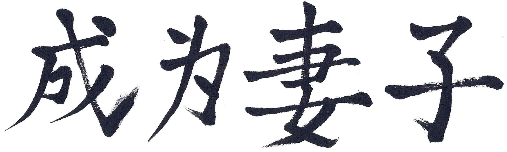
Becoming a Wife
When a girl is born in China, it’s considered her destiny to become a man’s wife before she turns 30, preferably a few years earlier. Her family wants this for her, even if she herself isn’t so eager to see it happen. If her career ambition or academic pursuits seem to delay her marriage, family tensions can escalate. Family words combine with societal messages to remind the errant daughter of her bridal duty.
The Grandmothers Speak Up
Hearing the girls talk about girlhood prompts their grandmothers to reflect on their own childhoods and wonder what’s next for their younger kin.
Mengping, who was born in 1992, is the oldest of Maya and Jennie’s “hometown” friends. After she graduated from Changzhou University, she moved to Shanghai and lives in dorm accommodations with other rural job seekers. She works selling golf equipment. She likes what she does but without scheduled time off, her work tends to become her entire life. She’d like to find a job with dependable hours and the possibility of gaining more skills. Mengping knows she wants to work in a job she likes when she is married, and she wants some time to figure out what that will be.
The Chinese consider babies one year old when they are born; children turn two after living for one year. Mengping is not eager for her 25th birthday to arrive. Already, it seems “too late” to do what she wants to do before she has to get married; for example, she’d like to spend time in Japan, since she majored in Japanese in college. Yet she knows that at home in Xiaxi Town, it’s late to find her a husband. Classmates from middle school are married, and her family worries that all the promising men will be taken soon.
Mengping’s mother and father have given her more freedom than other daughters in Xiaxi, urging her to chart her own course to happiness. Still, Mengping knows her family will be pushing her to get married soon.
Every month when Mengping goes home to visit family in Xiaxi, her grandmother greets her with the same question: “Do you have a boyfriend?” Her aunt chimes in to ask the same thing.
“No, not yet,” she replies, routinely.
Mengping is the youngest grandchild in her family and the only one not married. She has refused the many blind dates her family has arranged for her but knows she can’t hold out much longer. “Let’s wait until next year,” she says. “Maybe I’ll find someone before I need to go on blind dates.”
In Mengping’s village “once girls get to 25 they lose the right to pick a husband,” she explains. “Relationship, marriage, no one can predict. We can’t get married just to be married, right?” she muses. It is likely that the man Mengping marries will not be the husband she’d choose for herself, if she had more opportunity to meet men and time to decide.
No life experience is universal, but rural Chinese girls’ marriage and wifely parameters appear stuck in this unbending generational pattern. Even though much about these girls’ young lives as one-child daughters differs from those who came before them, marriage and the roles of women hold firm.
“Men always have work outside the home, and they earn most of the family’s money,” Mengping says.
“In China, most men don’t need to do housework,” Shan adds. Mengping agrees: “Yes, if a woman has a job, she has to do work outside, and when she is back home she must do the housework, and she is very tired.”
Speaking to Maya, in the best English she can muster, Shan asks, “With men in American family, do they have to do housework?”
“It depends on who you are and where the family is, but I think most wives want their husbands to do housework,” Maya says.
“I used to see on TV that so many men in America, they will take care of babies and women go outside for work,” says Mengping.
“Yeah, sometimes,” Maya says. “There are a lot of different opportunities, options.”
“I think it won’t happen in China,” says Mengping.
“Yes, in China maybe the man don’t accept this,” Shan says. “If a woman wants to go out to work and let the man take the baby or do housework, if another man doesn’t support this, they will even divorce.”
“Most of the men don’t even know how to take care of a baby,” says Mengping. “And they wouldn’t accept this advice,” Shan asserts.
As this conversation continues, Mengping adjusts her thinking: “The woman is so tired, and the man should do some housework. When women get money outside, they shouldn’t do so much housework, and men should do something for them.”
“Yeah, find a balance,” Maya says.
“They are equal,” Mengping agrees. “But so many women after marriage don’t have work outside. They just take care of the baby and organize. I think this life is very boring. I want to have a job if I’m married.”
“Me, too,” Maya says.
“Even if I want to work like a man, I will not be the only one to do housework. I know that other girls will do the housework, but I don’t think they should have to do it,” Mengping concludes.
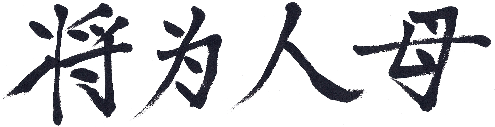
To Be a Mother
Shan is younger than Mengping, so she has a few more years before she reaches 25. She’ll be married by then, she says. Her family agrees. At least, that is the plan. Shan wants to choose the man she marries, but that doesn’t preclude her parents looking for candidates. Dating doesn’t go on in high school, the girls say. Shan’s parents forbid it, so as she heads off to college the idea of having a boyfriend is completely new.
Talk of Marriage and Kids
At Lunar New Year, Chinese families expect 20-something children to bring news home of potential spouses. With Shan’s mother, talk turns to grandchildren, too.
At Lunar New Year in February 2014, Shan returns to spend time with family in Xixiashu – doing activities with her cousins, joining both sets of grandparents for festive meals, and hanging out at home with her parents. Her mother, Chen Liuhong, grew up with a brother and a sister, so comparing marriage prospects of the cousins is customary at New Year. Liuhong is clear about her expectations for Shan – and for her future son-in-law. “If his family is not well-off, but he has a good job, that’s fine,” she says. “If he doesn’t have a good job or a good family, then we have nothing.”
“She’ll get married when she’s 25,” Liuhong declares of her daughter. Because Shan will “marry out [of the family],” her mom says, “the man should have a house. If she marries someone without a house, then I’ll buy her a house.”
With talk of marriage, talk of children follows. Here, mother and daughter strongly disagree. Not about her future child’s gender; each says that a son or a daughter is fine. It’s the number of children. “She should have two,” Liuhong says. “She doesn’t understand now, but when she’s my age [early 40s] she will. If she has two kids, they can keep each other company so neither gets lonely.”
Across the room, Shan is sitting on the couch with a younger girl cousin. She fires back with defiant clarity: “I say no.” Shan’s reasoning, which her cousin shares, is that two kids mean “too [much] trouble.” One will be enough. “Taking care of a child is a woman’s job, so I will care for my child by myself, not my husband,” Shan says. “As a man, his pressures will be heavy. If my job is not very busy, I will take care by myself, because I also want to reduce the mother’s stress.”
“You want to reduce your mother’s stress?” an American visitor asks Shan.
“Reduce my husband’s mother’s stress,” she replies. “My mother has nothing to do after this. Just cooking and then go out to play cards. Her life will be really relaxed.”
“Would you like that kind of life?”
“No!” Shan says emphatically. “I like the life of working outside the house, then when I come back I have meals with my family, and then after supper I take my child and husband outside to walk.”
As the mother-daughter volley continues, their words echo China’s conundrum: How do leaders persuade one-child policy daughters to have a second child now that the societal consequences of this policy are apparent? Little by little the Chinese government have been lifting one-child limitations. By November 2013, Chinese lawmakers had proposed that if a member of a couple was an only child, they were permitted to have two children. Then, in October 2015, China announced it was ending its 35-year old one-child policy to enable all couples to raise two children. Raised in a time of accelerating affluence and greater mobility, when educational oppurtunities have spiked for women, many younger Chinese women think as Shan does: Two kids equal too much trouble. Two children are too expensive with home prices soaring, the finest education costing dearly, and childcare – in the absence of nearby relatives – adding mightily to often out-of-reach price tag.
With China’s fertility rate hovering at the worrisome low of 1.4 children per woman, the nation needs more babies. Absent substantial changes, the elderly will account for roughly 25 percent of China’s population by mid-century. Countries don’t function well with so many of their citizens out of the labor force. Since many of China’s aging couples have only one son or daughter, the nation confronts challenging eldercare issues that heighten the concern about just how many children this younger generation of parents should have.
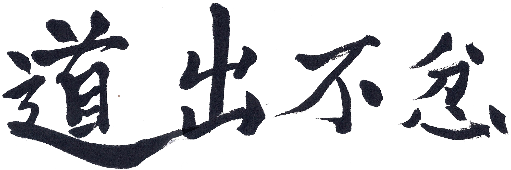
Voicing Discontent
Soon after Feng Yuan visited with the Xiaxi girls, she and I talked about what she’d heard. “Even now these girls can feel some difference or discrimination, so why do they say that boys and girls are equal?” Yuan asks rhetorically. “Because they believe girls and boys should be equal, they should enjoy equal treatment. Another reason is ideology or education teaches them that in our society men and women, boys and girls, are equal. If you look at their daily lives maybe they are equal – we have equal rights to go to school, we have equal rights to choose what we want in our everyday life. But talk to these girls in more depth, and they reveal different feelings."
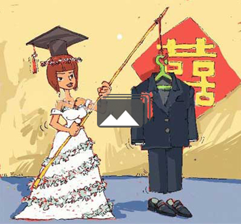
Leftover Women In 2007, the All-China Women’s Federation, the state-sponsored organization tasked with representing women’s interests, labeled women who were not married by age 27 as “leftover women” (shengnu). Media campaigns use this stigmatizing term to chastise well-educated women for being too picky in choosing a husband. Cartoonists find the topic irresistible.
Yuan’s activism alerts her to predictable barriers young women like these Xiaxi girls are likely to encounter. As more girls graduate from high school – and do better, on average, academically than boys – some universities admit males with lower gaokao scores than girls they reject. (In China, the gaokao exam is the sole measure used for university admittance.) Women students are steered away from certain majors, notably national security – for example, police academies accept few women – along with others regarded as physically demanding, like geosciences and aeronautics. "Due to the special nature of the work, it is not suitable for girls to apply" to marine technology and engineering courses, an official at one maritime university told a reporter for a story about gender bias at universities. Disparaging treatment of female students and staff assistants by male faculty is a topic ripe for discussion on social media. Still, despite these challenges and fewer women among China’s college-aged population, females outnumber males as university students at the undergraduate and master degree level.
After they graduate, women often confront discrimination in applying for jobs. “Some advertisements say ‘no women, we only want men,’” Yuan tells me. “Others tell a woman she should not be married if she wants to apply for the job,” despite China’s 2008 Law on Employment Promotion prohibiting such practices. Some ads are explicit about what they seek in an employee: a sales job ad, for example, said the applicant must be “a pretty woman with height no less than 1.7 meters.”
The law exists, but few employers abide by it. Nor do authorities enforce it. Women rarely turn to the courts to secure their legal rights. It wasn’t until 2012 that a woman filed a gender discrimination lawsuit after a Beijing training school refused to hire her for an assistant’s job. She had been told that only men could apply. Soon, another young woman filed a similar lawsuit in Hangzhou based on gender exclusion. Her case became the first in which a judge ruled that this kind of discrimination is illegal; the Beijing case had ended in a settlement.
“In the society Maya and Jennie live in, gender discrimination still exists, but it’s more invisible; people do it in very subtle, sophisticated ways,” Yuan says. “Here, it’s more visible, and it’s a problem because many people don't think it’s a problem. In both of our societies, women struggle against gender discrimination. It is our common cause.”
Article 48 of China’s Constitution promises “equal rights for women.” Young people in Maya and Jennie’s generation in China have voiced displeasure about the unequal treatment of women at work, in universities, and in the home. Until recently, activists had been finding creative ways to draw greater public awareness to discrimination and violence against women. But a government crackdown in March 2015 – targeting women activists – brought such public demonstrations to a halt.
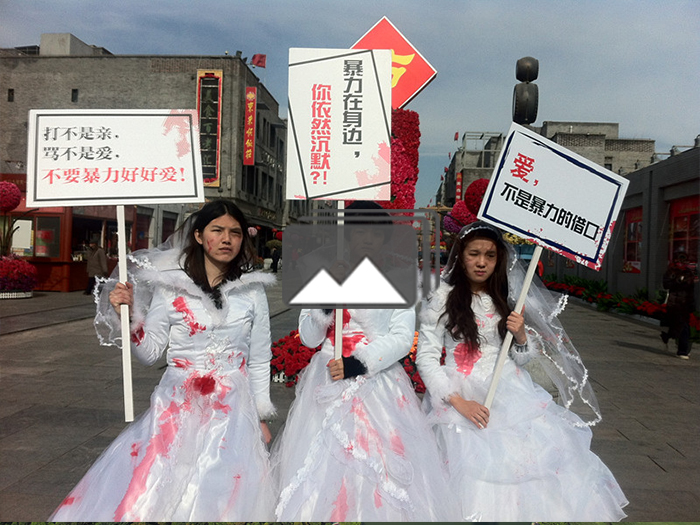
Taking to the Streets
On the day before International Women’s Day, the Chinese government arrested 10 women’s rights activists. At first, they were charged with "picking quarrels and provoking trouble," but when five of the women were jailed in Beijing the formal charge became "assembling a crowd to disrupt order in a public place." This time the police had arrested the women before they’d acted; the activists’ plan was to put up stickers in subway stations to spotlight sexual harassment on public transportation. By revising the charge against them, the government linked the women to past demonstrations as well. The five women were released after 37 days in jail and remain closely monitored as suspects.
When I was Maya and Jennie’s age, American women were demonstrating in the streets about unequal treatment. I was 17 when the New York Radical Women showed up at the 1968 Miss America pageant carrying signs saying “Women are not meat” – likening beauty pageants to cattle auctions. Girdles, bras, high-heeled shoes, hair curlers, and copies of Good Housekeeping were tossed into the “Freedom Trash Can” to symbolize women’s release from oppression. Crowds jeered as the women did this, giving TV cameras the confrontational images that characterized this emerging equal rights campaign.
A decade later, as a 27-year-old baseball reporter at Sports Illustrated, my name became synonymous with women’s rights as the winning plaintiff in a federal lawsuit filed against Major League Baseball. I’d been denied access needed to interview athletes in locker rooms. Cartoonists reveled in showing what women’s rights look like in male athletes’ locker rooms.
In 2018, as the #MeToo movement took off in America, activists in China again set out to make sexual harassment visible to the public. A newspaper provisions are considered weak due to the cultural emphasis on maintaining “family harmony.”
About a week after they girls had met with Yuan, Mengping and Maya talked again about girls being assaulted. “Chinese people think it’s the girl’s fault, so it’s something that is difficult in our mind,” Mengping tells her.
“Well, I don’t always think it’s the girl’s fault,” says Maya, “but I know that’s what a lot of people think when they hear about women being assaulted.”
“Yes,” says Mengping. “Now my mind has changed. We should not blame them, and the government and laws should protect them. My mind has changed.”